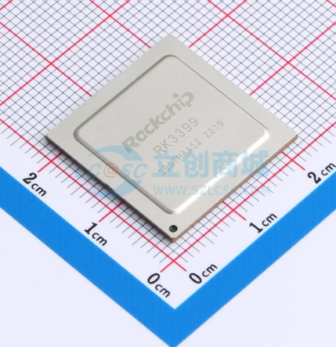
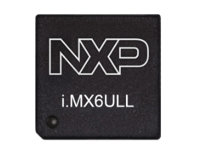

1.2.2 板上关键器件识别¶
所属章节：第1章 认识你的开发板 > 1.2 开发板开箱与外观认识
难度：[B] | 预计阅读时间：25分钟
本节导读¶
本节是一堂"寻宝课"。 拿起你的开发板，我们将一起在上面找到SoC、内存、存储、电源、晶振等关键器件。
学完本节，你不仅能叫出这些芯片的名字，还能通过外观判断它们的类型和作用。带上你的板子，我们开始吧！
SoC：板子的"大脑" [B]¶
6.1 SoC到底是什么？¶
SoC 的全称是 System on Chip（片上系统） 1。
你可以把它理解为一颗"超级芯片", 把传统计算机里分散在主板上的多个芯片（CPU、GPU、内存控制器、USB控制器、网卡等）全部封装到一颗硅片里。
想象你组装过台式电脑：CPU插一个槽、显卡插一个槽、声卡、网卡各插各的。而嵌入式开发板上，这些功能全被塞进了SoC这一颗芯片里。这就是为什么一块巴掌大的板子，能跑完整的Linux系统。

图1：SoC内部结构概念图: 一颗芯片里集成CPU、GPU、DDR控制器、USB控制器、GMAC等模块
6.2 常见的三种封装形式¶
拿到板子，怎么判断哪颗芯片是SoC？首先看封装形式。SoC常见三种封装，像三种不同形状的"房子"：
| 封装类型 | 外观特征 | 焊球/引脚数量 | 常见用途 | 识别难度 |
|---|---|---|---|---|
| BGA (Ball Grid Array) | 正面是光滑平面，背面是密密麻麻的焊球阵列，像围棋棋盘 | hundreds~thousands | 高性能SoC（RK3399、i.MX6） | ⭐⭐⭐ |
| LQFP (Low-profile Quad Flat Package) | 四边伸出扁平引脚，像千足虫 | 48~208引脚 | 中低端MCU、SoC（STM32、部分全志） | ⭐⭐ |
| QFN (Quad Flat No-leads) | 四边有很小的金属焊盘，没有外露引脚 | 32~128引脚 | 小尺寸SoC、WiFi模组 | ⭐⭐ |
识别口诀：看到板子上最大、最方正、焊点最密的那颗芯片，90%就是SoC。很多开发板还会给SoC配一个散热片或金属屏蔽罩，让它看起来像个"小碉堡"。
6.3 找到SoC型号： 看丝印¶
芯片表面会用激光刻上丝印（Silkscreen），也就是型号标识。但因为芯片尺寸小，字也很小，通常需要用以下方法辨认：
- 裸眼+侧光法：把手机手电筒斜着照向芯片表面，利用光影对比读取文字
- 手机拍照放大法：用手机微距模式拍一张，放大后辨认
- 查看原理图或官网：如果丝印实在看不清，去开发板官网查规格书


SoC型号通常包含这些信息：
💡 提示：丝印第二行的字母数字组合通常是生产批次代码，不同批次不影响功能，不需要纠结。
6.4 主流嵌入式SoC速查¶
下面是你在国产开发板上最常见的几颗SoC，认识它们就像认识Linux界的"明星"：
| 厂商 | 型号 | 定位 | CPU架构 | 典型频率 | 常见板子 | 识别特征 |
|---|---|---|---|---|---|---|
| Rockchip | RK3399 | 高性能 | 双核A72+四核A53 | 1.8GHz | 友善NanoPC-T4、Firefly | BGA封装，常配散热片 |
| Rockchip | RK3568 | 中端全能 | 四核A55 | 2.0GHz | 众多工控板、电视盒 | BGA封装，带NPU标志 |
| 全志(Allwinner) | H6 | 中端多媒体 | 四核A53 | 1.8GHz | 橙子派Orange Pi | BGA封装，常印有"H6" |
| 全志(Allwinner) | H616 | 入门多媒体 | 四核A53 | 1.5GHz | 电视盒、入门板 | 较小BGA，常配WiFi模组 |
| NXP | i.MX6ULL | 低功耗工业 | 单核A7 | 528/792MHz | 正点原子、野火 | LQFP封装，最容易辨认 |
⚠️ 陷阱：不要把WiFi模组当成SoC！很多板子在SoC旁边配一块写着"AP6212"或"RTL8821CS"的小模块: 那是无线网络芯片，不是主处理器。
⚠️ 陷阱：不要把PMIC（电源管理芯片）当成SoC！PMIC通常比SoC略小，丝印里有"PMIC"、"AXP"、"RK8"等字样。
6.5 上电确认SoC： 软件视角¶
如果外观辨认有困难，上电后可以通过命令确认SoC型号：
# 方法1：读取CPU信息（通用）
cat /proc/cpuinfo | grep "Hardware\|Processor"
# 方法2：读取设备树型号（ARM板常用）
cat /proc/device-tree/model
# 方法3：读取Rockchip专有的CPU信息
cat /sys/devices/system/cpu/cpu0/cpufreq/scaling_available_frequencies
💡 提示：RK3399读出来的cpuinfo可能会显示6个核心（2个A72 + 4个A53），看到6核基本就能确认是RK3399了。
存储器件: DDR、eMMC和SD卡槽 [B]¶
SoC是"大脑"，但大脑需要"短期记忆"和"长期记忆"。嵌入式板上的存储器件承担这两个角色。
7.1 DDR（运行内存）："短期记忆" [B]¶
DDR（Double Data Rate SDRAM）是SoC的临时工作内存，系统运行时所有程序都加载到这里。断电后内容消失。
外观识别：
- 通常是1片或2片长方形的BGA芯片，并排放在SoC旁边
- 尺寸比SoC小，比eMMC大
- 丝印常见型号："K4B4G"、"MT41K"、"H5TC4G"、"NT5CC"
- 容量标识：丝印中往往包含"4G"、"2G"、"8G"字样，代表容量
典型布局：
┌─────────────┐
│ SoC │
└─────────────┘
↓ 并排紧邻
┌─────┐ ┌─────┐
│DDR0 │ │DDR1 │ ← 两片DDR（双通道）
└─────┘ └─────┘
↓ 或只有一片
┌─────┐
│DDR0 │ ← 单通道配置
└─────┘

图3：DDR芯片与SoC的位置关系俯视图: DDR芯片通常紧贴SoC两侧放置
🔴 危险：DDR芯片的焊盘非常密，切勿用手触摸或按压。静电或物理损伤会导致内存不稳定，板子表现为"随机死机"或"无法启动"。
7.2 eMMC:"内置硬盘" [B]¶
eMMC（embedded MultiMediaCard）是板载的闪存存储器，相当于电脑的固态硬盘，存放操作系统、用户数据和应用程序。断电后数据保留。
外观识别：
- 尺寸很小，通常是9mm×12mm或11.5mm×13mm的BGA小方块
- 丝印会直接写容量："8GB"、"16GB"、"32GB"、"64GB"
- 常见型号前缀："KLM"（三星）、"MTFC"（镁光）、"THGB"（铠侠）
- 位置通常在SoC的另一侧，和DDR分居SoC两边

图4：eMMC芯片实物大小对比图:与SD卡、一元硬币的尺寸对比
7.3 SD卡槽与SPI Flash:"外置/备用存储" [B]¶
SD卡槽（TF卡槽）：
- 板子边缘最常见的金属弹片槽
- 旁边通常印有"TF"或"SD"字样
- 用来外接SD卡启动系统或扩展存储
- 部分板子支持从SD卡优先启动: 这是救砖神器！
SPI Flash（Nor Flash）：
- 非常小，通常是SOP-8封装（两边各4个脚）
- 容量小（4MB~32MB），存放Bootloader（U-Boot）
- 位置不固定，有时靠近SoC，有时靠近电源区域
- 丝印常见型号："W25Q128"、"MX25L6405"


7.4 存储容量速查表¶
| 存储器件 | 典型容量 | 速度 | 作用 | 断电保存 |
|---|---|---|---|---|
| DDR3/DDR4 | 512MB ~ 4GB | 极快（GB/s级） | 运行内存 | ❌ 不保存 |
| eMMC | 8GB ~ 128GB | 中等（100~300MB/s） | 系统+数据存储 | ✅ 保存 |
| SD卡 | 8GB ~ 256GB | 较慢（20~90MB/s） | 外扩存储/启动 | ✅ 保存 |
| SPI Flash | 4MB ~ 32MB | 慢（10~50MB/s） | 存放Bootloader | ✅ 保存 |
⚠️ 陷阱：不要把eMMC和DDR搞混！记住：写容量数字的是eMMC（长期存储），写型号字母的是DDR（运行内存）。
电源管理: 让板子"吃饱饭" [B]¶
8.1 电源输入接口识别 [B]¶
没有电，再好的SoC也是块塑料。板子上的供电入口通常有以下几种：
| 接口类型 | 外观 | 常见参数 | 所在位置 |
|---|---|---|---|
| DC圆孔座 | 圆柱形金属孔，中心有针 | 5V/2A、12V/2A | 板子边缘 |
| Type-C口 | 椭圆形，上下对称 | 5V/3A（支持PD） | 板子边缘 |
| Micro-USB | 梯形扁口 | 5V/2A | 板子边缘（老板子） |
| 排针供电 | 2~4根插针，标VCC/GND | 5V | 靠近电源区域 |

🔴 危险：严禁接错电压！ 大部分开发板用5V供电，如果误接12V，板子可能在几秒内烧毁。供电前务必确认：
- 电源适配器输出电压（看铭牌上的"Output"）
- 开发板丝印标注的输入电压（板子边缘通常印有"5V"或"12V"）
- 两者必须匹配！
8.2 PMIC芯片: "供电管家" [B]¶
PMIC（Power Management IC）是电源管理芯片，负责把外部输入的5V转换成SoC、DDR、eMMC各自需要的电压（1.1V、1.8V、3.3V等）。
外观识别：
- 通常是QFN封装的方形小芯片
- 位置在电源接口附近
- 丝印有明确线索：
- 全志平台常见："AXP805"、"AXP2101"
- Rockchip平台常见："RK808"、"RK818"、"RK809"
- 通用型号："ACT8846"、"SY8088"

💡 提示：PMIC周围通常有一圈小电感（黑色或银色的小方块，上面标"100"、"4R7"）和电容，这是PMIC的"外挂"元件，看到一堆电感围着一个芯片，十有八九就是PMIC。
8.3 电源指示灯 [B]¶
板子上通常有1~3颗LED指示灯，不同颜色代表不同状态：
| LED颜色 | 常见含义 | 状态解读 |
|---|---|---|
| 🔴 红色 | 电源指示 | 常亮=已通电；不亮=未供电或短路 |
| 🟢 绿色 | 系统/运行状态 | 闪烁=系统运行中；常亮=启动完成；不亮=未启动 |
| 🟡 黄色/蓝色 | 自定义功能 | 常为网络活动或用户可控LED |
⚠️ 陷阱：红灯亮但绿灯不亮≠板子坏了！红灯只说明有电进来，绿灯不亮可能是系统没启动成功，需要排查镜像或串口输出。
晶振与复位: 板子的"心跳"和"重启键" [B]¶
9.1 晶振: 提供"心跳节拍" [B]¶
晶振（Crystal Oscillator）是一块石英晶体，通电后会产生稳定的振动频率，给整个电路提供时间基准。就像乐队的节拍器，没有它所有模块都会乱套。
无源晶振（两脚金属壳）：
- 外观：圆柱形或扁长方形金属外壳，像小银胶囊
- 只有两个引脚
- 旁边通常有两颗小电容（贴片的棕色或黑色小方块）
- 常见频率：24MHz、32.768kHz
- 成本最低，但需要SoC内部集成振荡电路
有源晶振（四脚方形）：
- 外观：长方形金属壳，通常是4个引脚
- 比无源晶振大，尺寸约5mm×7mm
- 常见频率：24MHz、27MHz、50MHz
- 内部集成了振荡电路，输出更稳定的方波
- 丝印会写频率："24.000"、"27.000"

💡 提示：24MHz晶振是最常见的"主时钟"，给SoC提供基本节拍。32.768kHz晶振则专用于实时时钟（RTC），即使关机也能维持时间走动。
⚠️ 陷阱：晶振怕摔！如果开发板从高处跌落，晶振可能内部断裂，症状是上电后完全无反应，或串口输出乱码。维修时可用示波器测量晶振引脚是否有正弦波形。
9.2 复位按键: "重启按钮" [B]¶
复位按键（RESET）通常是一个小型贴片按钮，位于板子边缘。按下后电路复位，SoC重新从头启动。
识别特征：
- 旁边丝印标着"RESET"或"RST"
- 比旁边的电源键小（如果有的话）
- 按下后电源LED会短暂熄灭再亮起，表示重启生效

⚠️ 陷阱：RESET和POWER键不要搞混！有些板子POWER键短按是"休眠/唤醒"，长按才是"关机"；RESET键则是"立即重启"。开机状态下按RESET不会损坏数据，但正在写入文件时重置可能导致文件损坏。
其他外设芯片: 板子的"五官" [B]¶
10.1 以太网PHY芯片: 有线网络的"翻译官" [B]¶
SoC内部集成了MAC（媒体访问控制器），负责处理网络数据包。但SoC不能直接驱动网线，需要一颗PHY芯片做信号转换。
外观识别：
- 位置：RJ45网口附近
- 常见型号："IP1001M"、"RTL8211E"、"KSZ9031"
- 封装通常是QFN-48或LQFP
- 和网口之间通常有网络变压器（黑色方块，4~6个）

10.2 USB Hub芯片: USB口的"扩展器" [B]¶
SoC自带的USB控制器数量有限，如果板子有4个USB口，很可能用了一颗USB Hub芯片来扩展。
外观识别：
- 位置：USB口附近
- 常见型号："FE1.1s"、"GL850G"、"USB2514"
- 封装通常是LQFP-48
- 丝印常带有"HUB"或"USB"字样
💡 提示：如果某个USB口速度明显慢于其他口，可能是因为它连在Hub上而不是直连SoC的USB控制器。
10.3 音频Codec芯片: 声音的"编解码员" [B]¶
Codec（Coder-Decoder）负责把数字音频信号转换成模拟信号（输出到耳机/扬声器），以及反向转换（从麦克风输入）。
外观识别：
- 位置：耳机孔和麦克风孔附近
- 常见型号："ES8316"、"WM8960"、"ALC5651"
- 封装通常是QFN-32
- 旁边会有音频相关的电容和电阻

本节总结¶
我们逛完了开发板上的"核心景点"。下表总结了本节所有关键器件：
| 器件类别 | 芯片/器件 | 外观识别要点 | 位置规律 | 常见丝印关键词 |
|---|---|---|---|---|
| SoC | 主处理器 | 最大、焊点最密的BGA/LQFP | 板子中央 | RK3399、H6、i.MX6 |
| DDR | 运行内存 | 1~2片长方形BGA，比SoC小 | SoC两侧紧邻 | K4B、MT41K、H5TC |
| eMMC | 闪存存储 | 最小BGA，标有容量数字 | SoC附近 | 8GB、16GB、KLM |
| SD卡槽 | 外置存储 | 金属弹片槽，标TF/SD | 板子边缘 | — |
| SPI Flash | Bootloader存储 | SOP-8封装，8个引脚 | 靠近SoC或电源区 | W25Q、MX25L |
| PMIC | 电源管理 | QFN封装，周围一圈电感 | 电源接口附近 | RK808、AXP805 |
| 晶振 | 时钟源 | 金属壳，2脚或4脚 | SoC附近 | 24.000、32.768 |
| PHY | 以太网收发 | QFN/LQFP，网口旁 | RJ45附近 | RTL8211、IP1001 |
| USB Hub | USB扩展 | LQFP，USB口附近 | USB口旁边 | FE1.1s、GL850G |
| Codec | 音频编解码 | QFN，耳机孔旁 | 音频接口附近 | ES8316、WM8960 |
下一步¶
现在你已经能叫出板子上每颗芯片的名字了。
但光看不够: 下一节 1.2.3 核心接口与跳线说明 将带你认识板子上的按键、排针、跳线帽这些"人机交互"接口，学会如何通过它们控制板子的启动方式和功能。
配套资源¶
开发板器件位置总览图¶

-
System on Chip（SoC）的概念最早于1990年代由半导体行业提出，指将完整电子系统集成到单颗芯片上的设计方法。 ↩